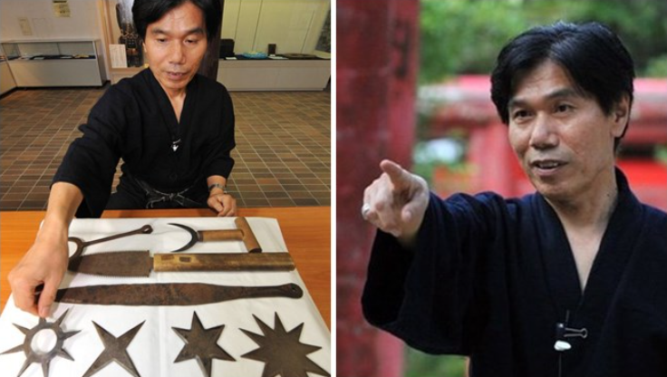

Selamat Datang di Website UKM Ninja
UKM Ninja adalah Unit Kegiatan Mahasiswa yang menampung para Mahasiswa
agar dapat menyalurkan hobinya dalam dunia ninja.

Apa itu ninja ? sebelum kita mengerti dengan apa itu ninja mari kita simak asal usul ninja itu sendiri.
Asal-usul ninja dapat ditemukan di yama bushi (yang berarti “prajurit gunung”) dan semanis yang terdengar,
yama bushi sebenarnya bukanlah prajurit. Mereka adalah cabang dari para pendeta yang tinggal di pegunungan dan
menyembah alam dengan hampir sepenuhnya mengasingkan diri mereka dari peradaban. Dengan kata lain, mereka adalah
orang – orang yang memiliki kemampuan bertahan hidup yang sangat hebat. Yama bushi umumnya menetap di area pegunungan
dan medan yang sulit di daerah Iga dan Koka. Ninja muda akan dilatih dalam teknik
bertahan hidup oleh yama bushi dan akan menyesuaikan ajaran-ajaran tersebut untuk kegiatan mata-mata dan pembunuhan.
Mari kita sama sama lihat panutan kita yaitu ninja terakhir yang ada di muka bumi ini

Ninja mungkin selama ini hanya jadi cerita masa kecil kita ya. Berlatar belakang pengetahuan di masa belia saat kita sering menonton tayangan kartun Ninja Hatori,
tentu saja yang ada di pikiran kita saat mendengar kata ninja tak jauh dari sosok si pembela kebenaran itu. Tidak jarang juga beberapa dari kita yang berpikiran bahwa
ninja adalah salah satu tokoh dalam cerita-cerita di negara Jepang yang tidak ada versi nyatanya.
Namun ternyata tahukah kamu bahwa segala cerita tentang ninja itu adalah benar adanya lho.
Siapa sangka di negeri matahari terbit itu memang sempat ada kelompok ninja yang hidup di tengah-tengah masyarakat. Bahkan saat ini pun di negeri sakura masih memiliki sosok
ninja yang tinggal di sana. Namun ternyata sang ninja yang dikenal dengan nama Jinichi Kawakami ini merupakan sosok ninja terakhir di Jepang.

 Home
Home